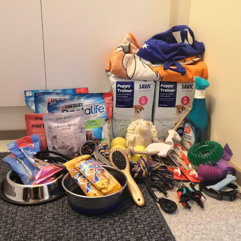
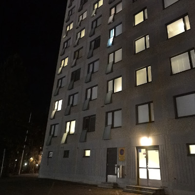
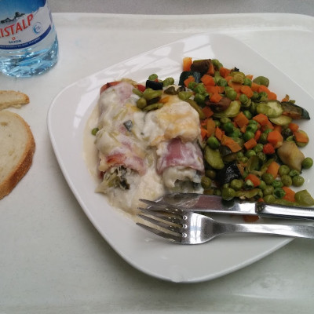
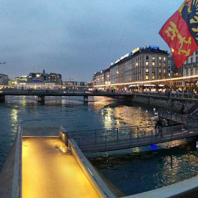

Using Linux at work is bliss

Mikkis from afar

Going home

Quite a life changer
Copenhagen 2020

Human potential unlimited

Oi, suuri ja mahtava...

Keeps nuclear physicists going

So many banks and Rolex stores